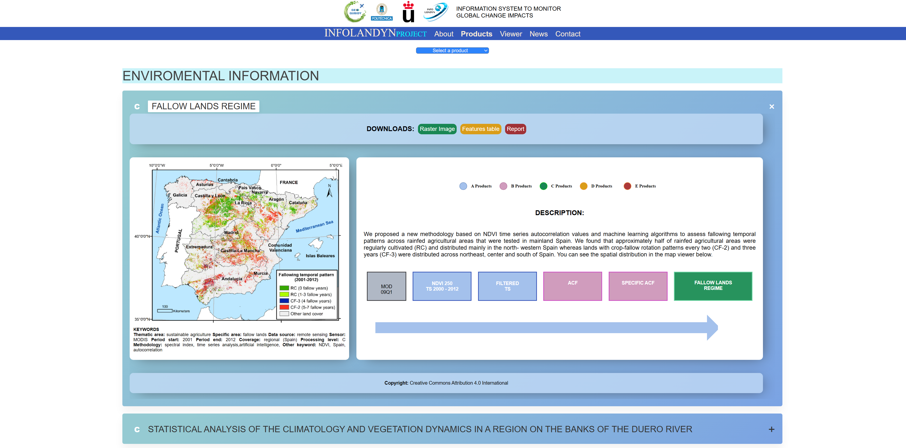
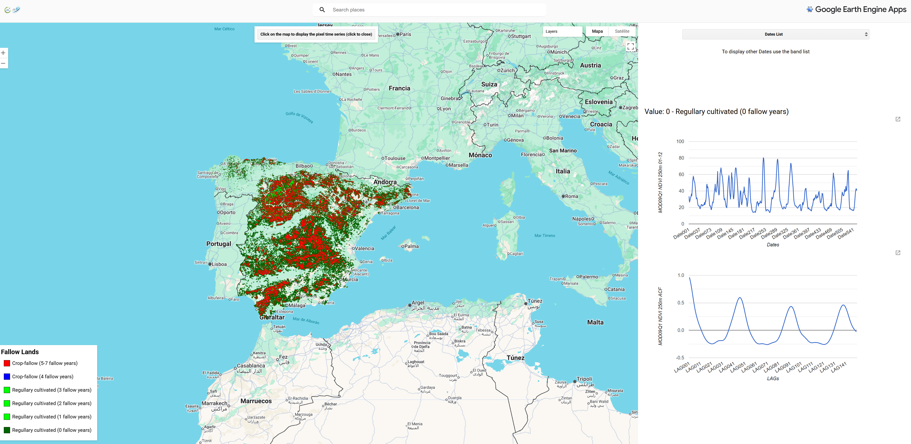
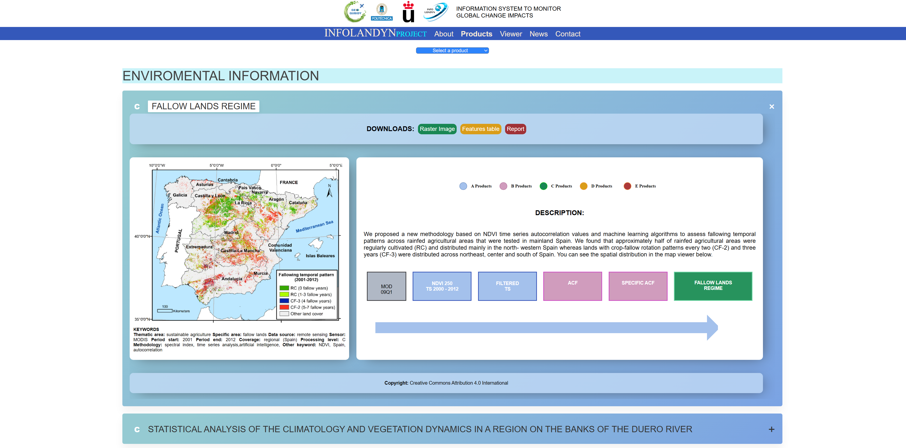
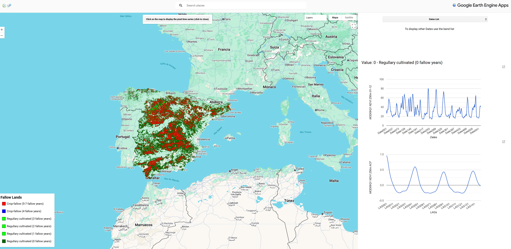

Infolandyn — Visualización geoespacial
Proyecto web de visualización de elementos geoespaciales interactivos, implementado usando Google Earth Engine para la visualización y procesamiento de datos geoespaciales en el navegador.
Descripción
La web muestra capas geoespaciales, controles de visualización y herramientas interactivas para explorar datos (capas vectoriales/ ráster) sobre mapas basados en Google Earth Engine. Está pensada para compartir resultados y permitir exploración interactiva por parte de usuarios y colaboradores.
- Tecnologías: Google Earth Engine, JavaScript, HTML/CSS
- Interactividad: selección de capas, controles temporales y legendas
- Propósito: demostración y publicación de visualizaciones geoespaciales
Galería
 


